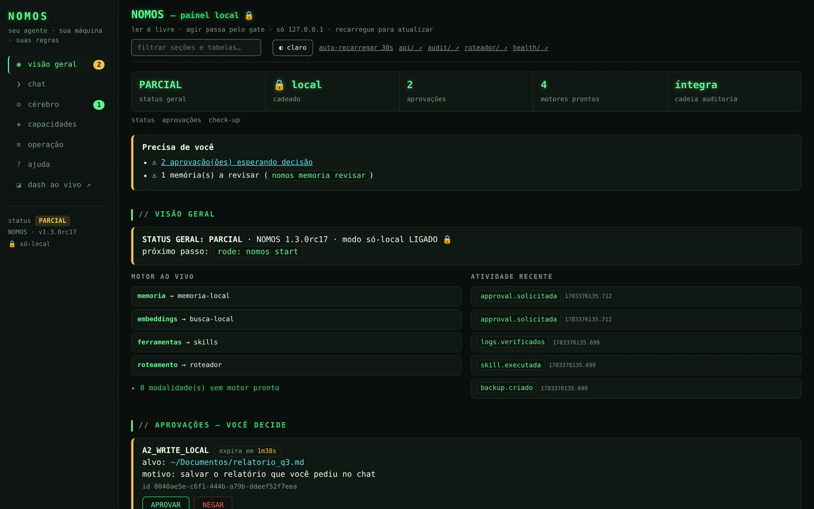
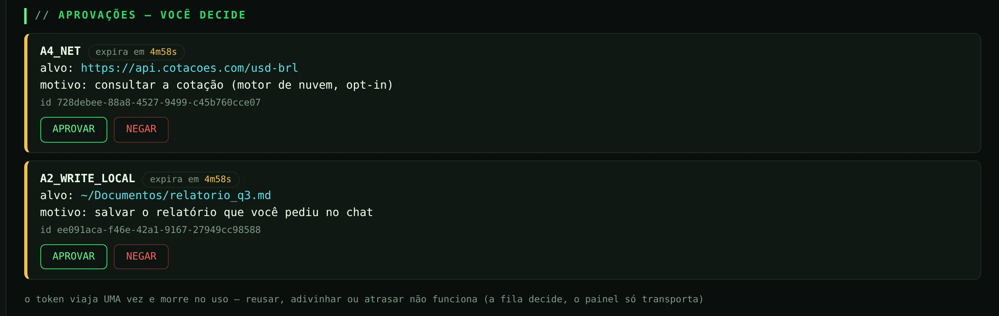
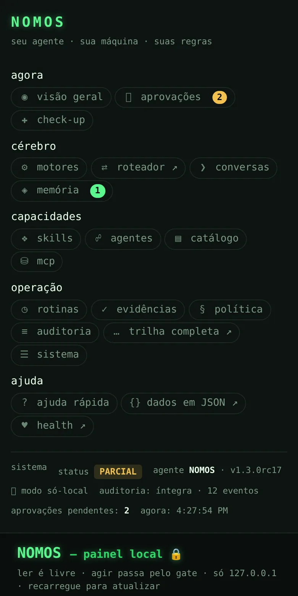
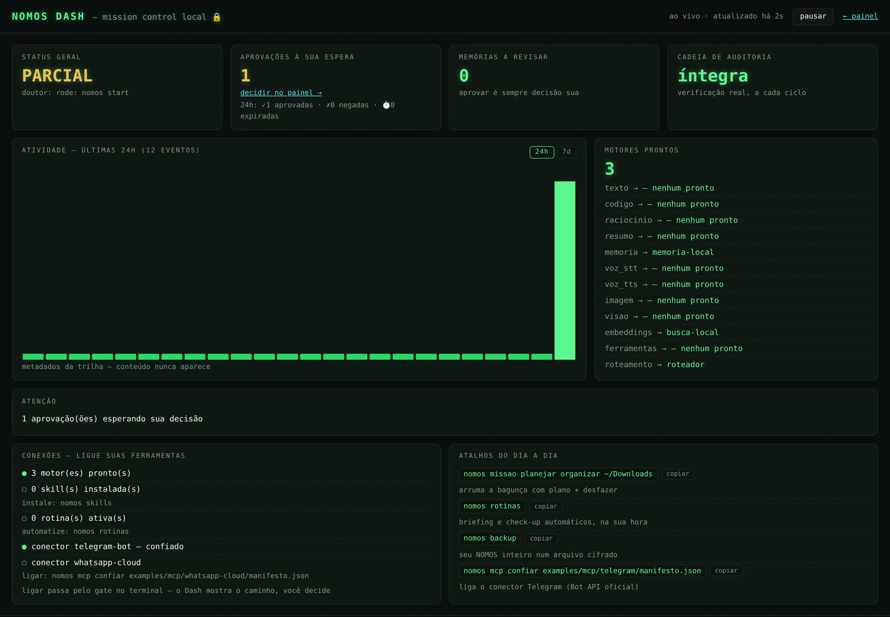

Seu agente. Sua máquina. Suas regras.
Um agente pessoal de IA que roda 100% no seu computador. Motores locais, memória, cofre de chaves, skills e agentes — todos governados, com aprovação humana em cada passo. A nuvem é uma tomada opcional que você pluga de propósito, nunca por padrão.
Um agente que trabalha para você, não contra
NOMOS vem do grego νόμος ("a lei"). É a plataforma que instala, configura, governa e executa o seu agente pessoal — inteiramente na sua máquina. Cérebro, memória, chaves e registros ficam com você. Três princípios inegociáveis:
Local por lei
Por padrão, nada sai da sua máquina. A própria política bloqueia qualquer saída para a internet até você permitir.
Pede licença
Toda ação sensível é aprovada por você. Em scripts e CI a resposta é sempre "não" — fail-closed, sem flag de bypass.
Nunca finge
Sem cérebro conectado, o NOMOS avisa. Jamais inventa uma resposta ou finge um dado que não tem.
Tudo que você precisa, na sua máquina
Cérebro & conversa
Cérebro leve embutido
Baixa um modelo pequeno (~400 MB) que roda em qualquer laptop, sem GPU nem Ollama. Uma vez só.
Roteador automático
Escolhe o melhor motor para cada tarefa — local primeiro, sempre. Você não precisa entender de modelos.
Conversa de verdade
Resposta em streaming (aparece enquanto o motor gera), memórias relevantes trazidas ao contexto com transparência total, e /arbitrar no chat para o melhor de vários motores.
Arbitragem entre motores
Além de rotear: vários motores prontos geram respostas, debatem entre si e um árbitro converge na melhor execução real. Sem motor pronto, o NOMOS avisa — nunca inventa.
Memória local
SQLite na sua máquina, com busca full-text (FTS5). Você revisa o que vira memória permanente (nomos memoria) — o NOMOS nunca decide sozinho o que guardar.
Conversas com retenção
Abra, busque, fixe, exporte e esqueça conversas. Política de retenção sob o seu controle.
Governança & segurança
Missões que fazem
Não só responde: nomos missao monta um plano legível, pede UMA aprovação, executa passo a passo e fecha com evidência — e um comando desfaz tudo. Nunca sobrescreve, nunca age sem seu "sim".
Fila de aprovações
Toda ação sensível passa por uma fila (nomos approvals) que você aprova — no terminal ou no painel local. Em scripts, a resposta é sempre "não".
Cofre e backup
Cofre de chaves com senha-mestra; segredos criptografados, nunca em logs. Seu NOMOS inteiro cabe num arquivo cifrado (nomos backup) — memórias, chaves e tudo.
Skills governadas
Habilidades instaláveis e assinadas que só fazem o que declaram, com risco visível e aprovação.
Agentes com escopo
Agentes oficiais e próprios, cada um com ferramentas, motores preferidos e risco máximo definidos.
Auditoria com âncora
Tudo que acontece é registrado. Trilha de auditoria com âncora HMAC — evidência que não se altera em silêncio.
Política executável
A política de segurança não é um PDF: cada invariante (SEC-01…12) é um teste. Se o código divergir da política, a suíte falha.
Evidências verificáveis
Cada missão gera um pacote com relatório, manifesto e SHA-256 (nomos evidencia) — auditável offline, por qualquer pessoa.
Botão de pânico
Um comando para cortar tudo. Controle total, inclusive o de parar.
Operação & integrações
Cidadão do ecossistema MCP
O NOMOS é servidor Model Context Protocol (tools só-leitura para o Claude Desktop e outros agentes) e cliente — usa servers locais como capacidades, cada tool com nível de risco A0–A6 e confiança registrada. Tudo via stdio, sem rede.
Painel web local + chat
Roda na sua máquina (nomos painel): status, motores, evidências, política A0–A6 viva, auditoria verificada, API JSON — e um chat local estilo ChatGPT com histórico embutido. Ler é livre; escrever passa por duas portas governadas: aprovações (token de uso único) e o chat (só motor local, fail-closed, cada turno auditado). Só 127.0.0.1. Ver por dentro →
Rotinas e briefings
Agende tarefas locais e gere briefings — sempre com sua aprovação antes de qualquer efeito. E entregue o resumo do dia no Telegram, WhatsApp ou e-mail, por conector oficial. Ver conexões →
Atualização com licença
nomos atualizar checa se há versão nova e propõe — mas nunca atualiza sozinho. Você decide, sempre.
Doutor
nomos doutor: um check-up honesto do que está pronto e qual é o próximo passo.
Muitos motores. local primeiro, nuvem opt-in
O NOMOS fala com vários motores por modalidade. Os locais vêm prontos ou embutidos; os conectores você pluga se já tiver a ferramenta; a nuvem só funciona se você habilitar de propósito.
ver os 15 motores e conectores do catálogo
| Motor / conector | Faz | Onde roda |
|---|---|---|
| Cérebro embutido | texto, resumo, raciocínio | local |
| Ollama (texto) | texto, resumo, raciocínio | local |
| Ollama coder | código | local |
| Servidor OpenAI-compatível (LM Studio e afins) | texto, código | conector |
| Texto como código | código com o motor de texto (fallback) | local |
| Visão local (Ollama) | entender imagens | local |
| Stable Diffusion WebUI | gerar imagens | conector |
| ComfyUI | gerar imagens | conector |
| Piper | falar em voz alta (TTS → WAV) | conector |
| Whisper | transcrever áudio (STT) | conector |
| Memória local | lembrar (SQLite) | local |
| Busca local | buscar nas memórias (FTS5) | local |
| Skills instaladas | habilidades assinadas como capacidades | local |
| Claude | texto, código, raciocínio | nuvem · opt-in |
| Roteador automático | escolher o motor certo | local |
Agentes com escopo, ferramentas e risco definidos
Cada agente declara o que pode usar, quais motores prefere e até que nível de risco pode chegar. Três vêm de fábrica — e você cria os seus com o SDK.
pesquisador-local
Acha coisas nas suas memórias, conversas e arquivos indexados. Ferramentas de leitura e resumo. Risco máximo: A0 (só leitura local).
programador
Ajuda com código usando motores de código locais, com as travas de segurança do NOMOS.
segurança
Perfil voltado a revisão e postura de segurança, honesto sobre limites.
Crie o seu (SDK)
nomos agent create --name meu-agente cria a identidade; o manifesto do agente (o mesmo formato dos oficiais) declara ferramentas, motores preferidos e risco máximo. Seu agente, suas regras.
Habilidades instaláveis, assinadas e transparentes
Uma skill declara o que faz, de que permissões precisa e traz hash de integridade. O NOMOS mostra o risco e pede aprovação antes de instalar ou rodar. Exemplos que acompanham:
busca-arquivos
Procura arquivos por nome e conteúdo numa pasta — só leitura (A0).
lembrete
Formata um lembrete estruturado para a memória do NOMOS.
organizador
Relata os arquivos de uma pasta: contagem por tipo e os maiores.
sistema-info
Mostra Python, sistema e espaço em disco — só leitura.
Você vê tudo. Você decide tudo.
Um comando — nomos painel — abre o cockpit no seu navegador: status, motores, memória, evidências, auditoria e a fila de aprovações, tudo numa tela. Roda só em 127.0.0.1, com URL secreta, zero assets externos — nada sai da sua máquina, nem para desenhar a página.


Busca e filtro instantâneos
Filtre tabelas e cards enquanto digita; busque na trilha de auditoria com audit/?q= — só metadados, já redigidos, nunca conteúdo.
Chat local com histórico
Uma aba de chat estilo ChatGPT dentro do painel: histórico de conversas à esquerda, thread à direita, composer embaixo. Roda só motor local (o cadeado vale) e, sem motor pronto, avisa em vez de inventar. Cada turno fica na auditoria.
Aprovar sem sair do fluxo
A mesma fila do terminal, no navegador: token single-use, expira sozinho em 5 min, tudo auditado. Duas portas de escrita, ambas governadas — o resto do painel é leitura.
Roteador ao vivo
A visão geral mostra qual motor atenderia cada modalidade agora — e por quê. Sem motor pronto, o painel diz "nenhum pronto". Nunca finge.
Sinais para os seus scripts
O endpoint health/ devolve JSON com status, próximo passo e avisos reais — pronto para rotinas, monitoramento e integrações locais. E api/?secao= recorta só a fatia que você quer.

E quando você só quer OLHAR: o NOMOS Dash
Dentro do painel vive o Dash — nossa ferramenta própria de mission control, ao vivo: os quatro sinais vitais num relance, a atividade das últimas 24h em barras (dados reais da trilha), o motor escolhido por modalidade e os avisos que esperam você. Atualiza sozinho a cada 5s, destaca só o que mudou, pausa quando a aba se esconde — e se a conexão cair, diz "reconectando…" em vez de fingir.

Seu briefing onde você já está
O NOMOS gera o resumo do seu dia — tarefas, rotinas, próximo passo — 100% na sua máquina, e entrega no canal que você escolher: Telegram, WhatsApp ou e-mail. Cada canal é um conector MCP oficial (nada de bibliotecas que fingem ser o app), com credencial só no seu ambiente e sua aprovação a cada envio (nível A3). Sem aprovação, nada sai.
Telegram
Crie um bot no @BotFather (2 min, grátis) e receba o briefing no seu chat. Bot API oficial — enviar, ler, validar.
Pela WhatsApp Business Cloud API oficial da Meta (texto e templates). Só o caminho oficial — sem risco de derrubar seu número.
E-mail (SMTP)
Pelo seu próprio servidor SMTP, com a biblioteca padrão do Python. STARTTLS por padrão; recusa texto claro.
Instagram e TikTok estão mapeados com honestidade: exigem apps aprovados pela plataforma, então ainda não têm conector. O mapa completo dos canais — o que existe, o que exige o quê, e o que não vamos fingir — está em docs/CONECTORES_SOCIAIS.md.
A escada de risco A0–A6
Nada é "seguro ou inseguro" no vácuo. Toda ação é classificada num nível — e quanto mais alto, mais explícita precisa ser a sua aprovação. Isto é governança concreta, não promessa.
Ler arquivos e memórias na sua máquina. O básico, sem risco de saída.
Criar ou alterar arquivos na sua máquina.
Qualquer egress para a internet. Bloqueado por padrão — precisa do seu "sim".
Usar um conector externo ou uma chave do cofre.
Acessar dispositivos sensíveis — sempre governado.
Rodar código ou instalar uma habilidade nova. Aprovação forte.
Ações irreversíveis. O topo da escada — máxima fricção proposital.
O que o NOMOS faz
- Dry-run: simula e mostra o que aconteceria, antes.
- Fila de aprovação com token de uso único e validade curta.
- Conselho (council) que revisa a ação antes de liberar.
- Auditoria com âncora HMAC — evidência à prova de adulteração silenciosa.
- Sandbox para rodar o que precisa de isolamento.
O que o NOMOS não faz
- Não sai para a internet sem opt-in.
- Não executa ação real por padrão — dry-run primeiro.
- Não se atualiza sozinho.
- Não expõe segredos em logs.
- Não promete o impossível — entrega controle e evidência.
Encontrou uma vulnerabilidade? Reporte em privado. Detalhes no modelo de ameaças.
Entrada → motor → simulação → aprovação → evidência
Você fala
Descreve o que quer, em linguagem natural.
Roteia o motor
O roteador escolhe a melhor estratégia, local primeiro.
Simula (dry-run)
Mostra exatamente o que faria, sem executar.
Conselho revisa
A política e o conselho checam o risco da ação.
Você aprova
Vê tudo, aprova, nega ou ajusta.
Executa e registra
Só com seu OK — e a auditoria guarda a evidência.
Escolha o seu jeito de começar
macOS / Linux
Baixe o instalador de 1 clique e o pacote .whl na mesma pasta, e rode bash install.sh — com verificação SHA256, backup do que existia e rollback automático se algo falhar.
Windows
Baixe o instalador e o .whl na mesma pasta e rode install.ps1 no PowerShell — mesma verificação de integridade, backup e rollback do instalador de Mac/Linux.
Pelo código (git)
Para quem quer ver cada linha antes de rodar — o jeito mais NOMOS de instalar:
Última release publicada: v1.3.0rc17 "cockpit + conexões" (pré-lançamento) · todas as versões e pacotes .whl · confira a integridade com SHA256SUMS (sha256sum --check SHA256SUMS) — cada release publica os hashes de todos os arquivos.
Requer Python 3.10+ (Mac, Windows ou Linux) — sem GPU, sem super-PC. O NOMOS nunca se atualiza sozinho: novidades só com nomos atualizar, opt-in e com sua aprovação. Guia completo: Manual de Instalação.
Feito para quem leva privacidade a sério
Desenvolvedores
Automação local segura. Skills e agentes próprios. Integração com seus fluxos.
Operadores
Tarefas repetitivas com confiança, dry-run e auditoria completa.
Empresas
Dados sensíveis na sua infraestrutura. Sem APIs cloud obrigatórias. Governança auditável.
Qualquer um
Que quer IA sem complicação e sem abrir mão da privacidade.
O caminho até aqui e adiante
Política SEC-01…12 como teste, evidências auditáveis, agentes guardiões (docs/marca e git) no CI, arbitragem real local-first.
Painel (API JSON, auditoria verificada, roteador explicado), streaming e /arbitrar no chat, memória 2.0, motor OpenAI-compatível local, executor de missões e MCP (servidor + cliente com confiança registrada).
Painel 4.0 em abas com tema claro/escuro, chat local com histórico, aprovações com token de uso único no navegador, e o NOMOS Dash: mission control ao vivo (sinais vitais, sparkline 24h/7d, uptime) que se atualiza sozinho.
Conectores MCP oficiais (Telegram, WhatsApp, e-mail), nomos mcp exemplos para descobri-los, e o briefing diário entregue no seu canal — automação de ponta a ponta, sempre com seu OK (A3).
Conectores Instagram/TikTok (quando os apps forem aprovados), mais canais (Slack/Discord), visão de tela assistida local, personas multi-agente.